黄金比例从古埃及开始就出现在了建筑中，虽然没有文字资料流传下来可以确定这是不是有意而为。比如胡夫大金字塔的高和底就与黄金比例有着密切的关系。
古罗马的凯旋门、利西亚人的坟墓以及古城米拉（今土耳其的代姆雷）的教堂同样再现了黄金比例。其他远离希腊古典文化的文明似乎也很欣赏黄金比例。的的喀喀湖位于玻利维亚首都拉巴斯附近，距此不远的地方有一处“太阳门”，这是一座前印加时期的纪念碑，完全按照黄金比例建造而成。
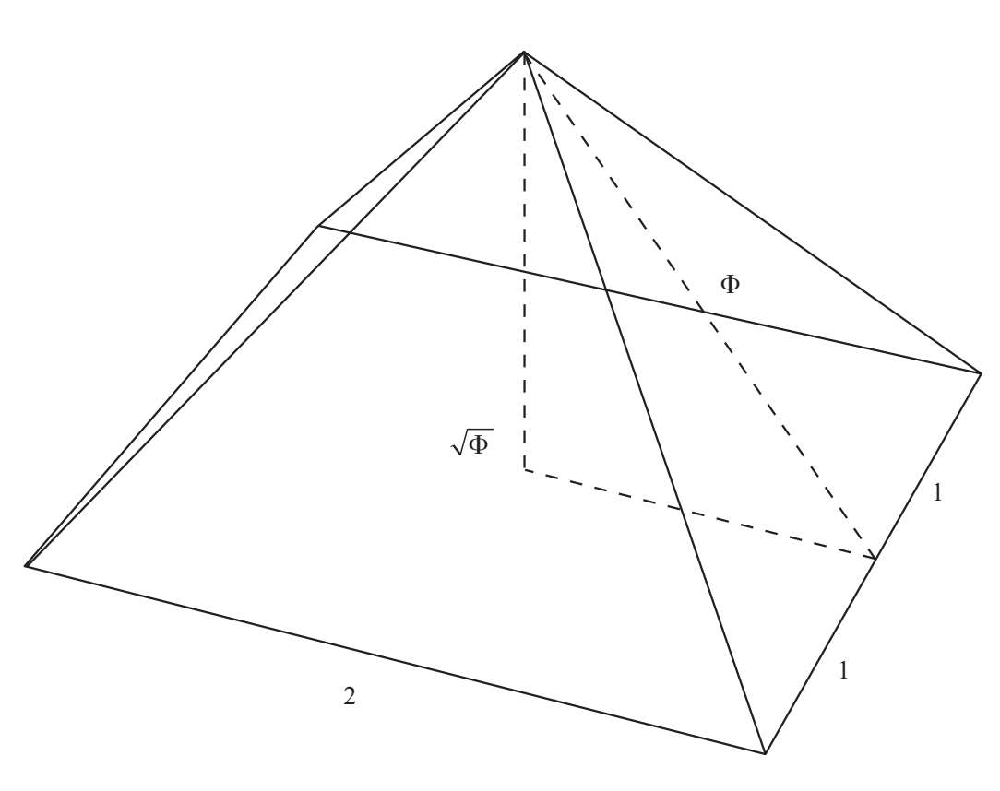
正如我们在第一章中讲到的那样，在所有古代世界的建筑作品中，最能表现出黄金比例特点的非帕提侬神庙莫属。菲狄亚斯设计了这一古代奇迹。现代人把黄金比例称为“Φ”，正是菲狄亚斯希腊名的首字母。
当然，黄金比例在古希腊文化中最为常见，但是对这处古迹的调查显示，黄金比例的误差多得吓人，这一结果让许多专家疑惑不已。我们不必深究建造者是否有意使用了黄金比例，重点是能否在帕提侬神庙的设计中找到黄金比例。人们总是可以在任意两点之间数出666步、666个台阶或666英寸，以此来预示着从地狱爬出的魔鬼。同样，即使建筑师没有在设计中考虑使用黄金比例，但如果我们对任何古迹测量得当，也总是可以在其中发现它。
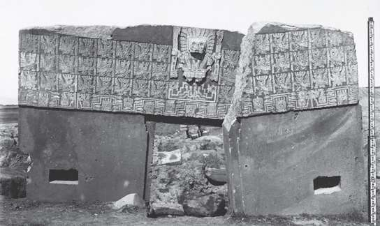
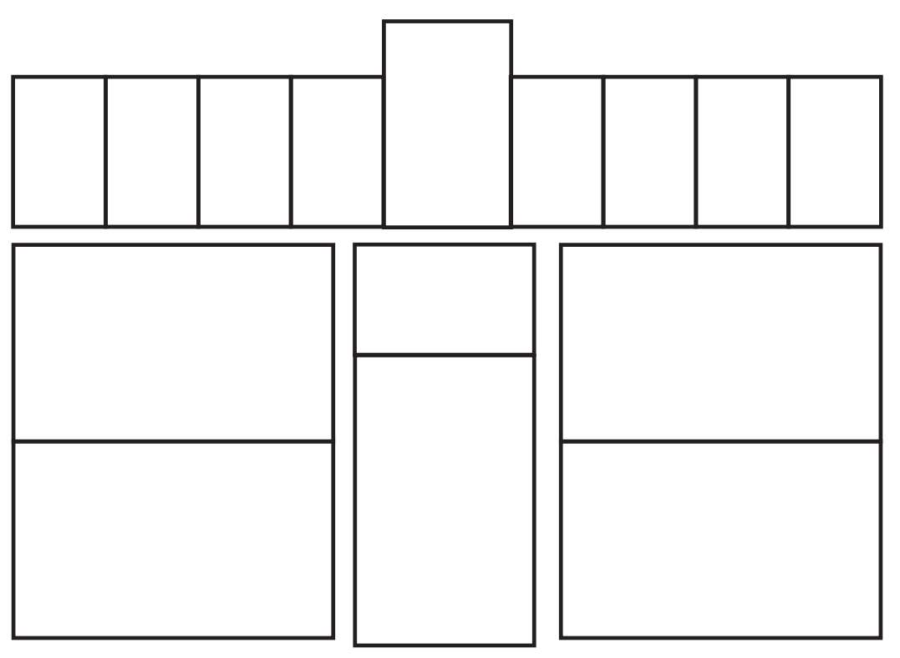
玻利维亚的太阳门，如今已经遭受了很大程度的破坏。该纪念碑似乎是按照黄金矩形设计而成的。大约建于公元前1500年。
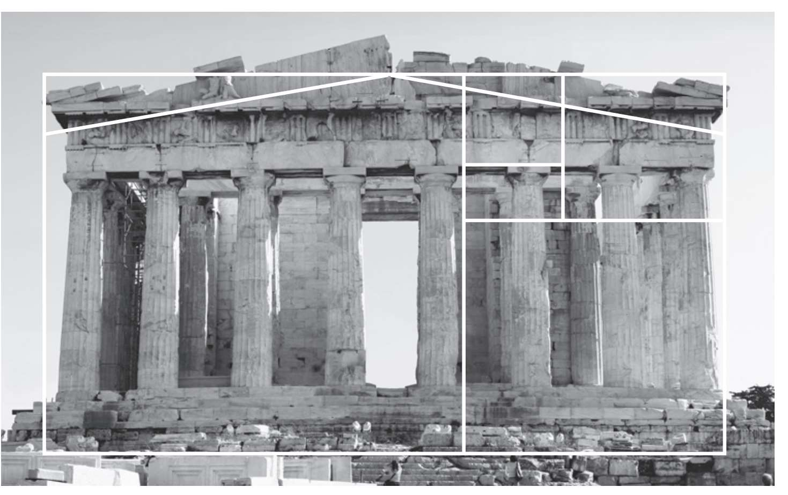
尽管雅典的帕提侬神庙经过准确的实地测量后并不完全符合黄金比例，但它还是被认作在建筑中使用黄金比例的典范。
然而我们却可以证明中世纪的人确实有意使用了黄金比例，因为黄金比例在当时的记录中十分常见。正五边形或五角星的结构也在这一时期出现。哥特式大教堂的玫瑰窗十分壮观，正是运用黄金比例的经典案例。
为了追求美感，文艺复兴时期的建筑理论家根据维特鲁威的《建筑十书》的译本再度提出了和谐比例的概念。在《神圣比例》的相应部分，卢卡·帕乔利将人置于万物的中心，“我们首先会讲到躯干和四肢的人体比例，因为所有度量及其命名都来自人体，上帝用手一指，强调了各种比例与平衡，展示出了大自然最本质的奥秘”，然后我们再用人体比例去衡量这个世界。“为此，古人根据正常的人体结构进行设计创作，尤其是按照人体比例建造神庙。因为人们在神庙内发现了两种关键图形，圆……和正方形，少了它们什么也做不成。”
在阿尔伯蒂的《论建筑》中，这位博学之人确信，美是由各部分之间以及各部分与整体之间的和谐构成的。他写道，美“是一种审美有机体的绝对价值，通过数学的计算，比例的相互作用，或是柏拉图的《蒂迈欧篇》（Timaeus）中准确记载的毕达哥拉斯平均，激起了人类灵魂中内在的喜悦之情，唤醒了人与宇宙之间不可替代的和谐之道”。
在音乐领域中，比例与和谐的密切关系促使人们在建筑结构的要素之间寻求同样的关系。或许，这种观点是由威尼斯的风格主义建筑师安德烈亚·帕拉弟奥（1508—1580）思考得来的，正是因为这样他才会对新古典主义产生如此重要的影响。在帕拉第奥的《建筑四书》（Four Books of Architecture）中记录了阿尔伯蒂的观点。阿尔伯蒂认为成比例的声音对耳朵来说是一种和谐，而成比例的尺寸对于眼睛来说也是一种和谐：“虽然除了研究事物起因的人之外没有人知道为什么，但这样的和谐让人非常愉快。”
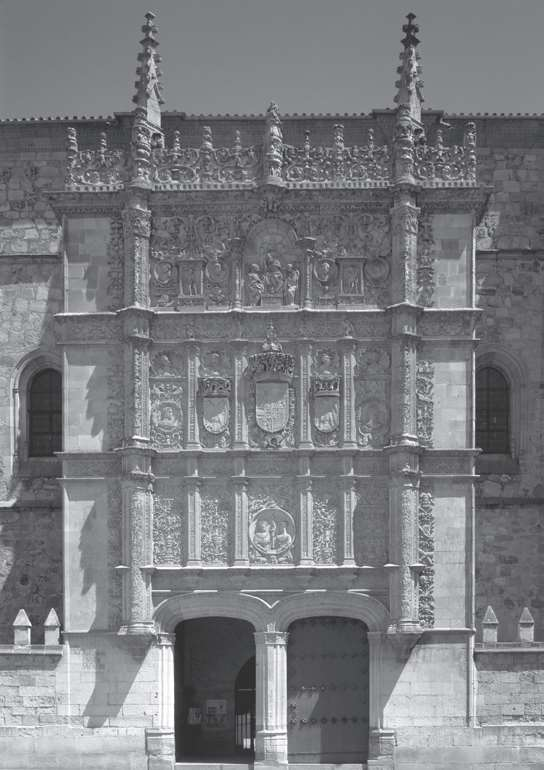
萨拉曼卡大学的正门包含了一个巨大的黄金矩形。
文艺复兴时期，并不是只有意大利将黄金比例用于纪念建筑的设计中。萨拉曼卡大学是西班牙历史上最古老的大学（建于1218年），也是欧洲第一所被称为“大学”的机构。15世纪，萨拉曼卡大学的正门按照银匠式风格重建，这种风格将摩尔式与西班牙文艺复兴时期的佛拉芒——哥特式建筑风格融为一体。黄金比例是该建筑比例的核心。
当代建筑
建造技术的进步与新材料的发展让20世纪的建筑师挣脱了想象的枷锁。美国人弗兰克·劳埃德·赖特（1867—1959）是有机建筑的主要倡导者之一。赖特在自己去世前不久完成了最后一项优美的设计，即纽约古根海姆博物馆的坡道，他大胆地将其设计为一条鹦鹉螺结构的螺线。
拥有波兰和以色列双重国籍的建筑师泽维·赫克同样将螺线用到了建筑设计中，比如1995年建于柏林的海因茨·加林斯基小学。赫克在设计中最先想到了向日葵，他以圆作为中心，所有建筑部分围绕这个圆呈辐射状排列。
这座建筑将正交直线与对数螺线结合到一起，试图表现出僵化的人类知识与控制下的自然混沌所产生的协同效果。它模仿了一株向着太阳的植物，因此阳光一整天都能够照亮教室。
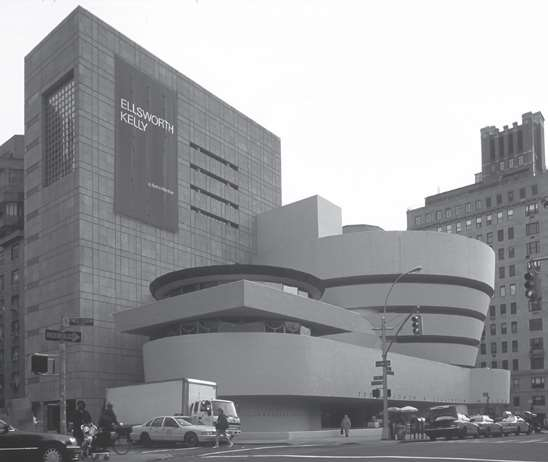
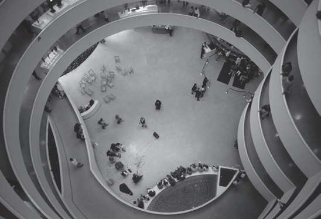
纽约古根海姆博物馆，黄金螺线形坡道的外部图和内部图。这座建筑彻底颠覆了当时的建筑风格。
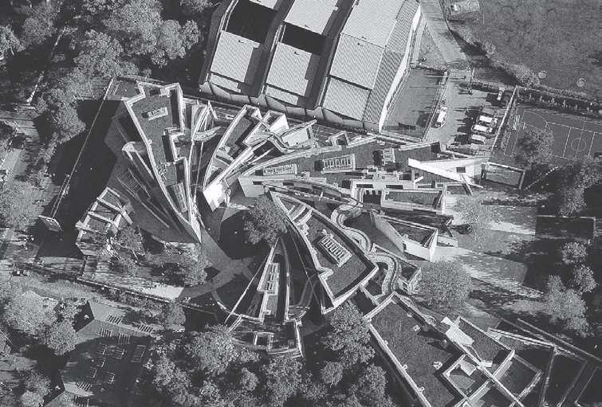
海因茨·加林斯基小学鸟瞰图，泽维·赫克设计。这一设计受到向日葵花瓣排列的启发。赫克模仿了自然的花瓣结构，而花瓣的排列却与黄金比例密切相关。
昆西公园位于美国马萨诸塞州的剑桥市，里面的许多景物都参照了黄金螺线。1997年，艺术家戴维·菲利普设计了这座公园，它距离克莱数学研究所非常近。克莱数学研究所是一所著名的数学研究中心，原因之一是该研究所为七道千禧年大奖难题提供了700万美元的奖金，这些难题由数学领域最杰出的专家挑选而出，解答出每一题都会获得100万美元。在昆西公园漫步，人们可以看到黄金螺线的雕塑和金属曲线，还有两块贝壳浮雕以及一块带有平方根符号的石头。一块牌匾介绍了与黄金比例有关的信息，甚至自行车停放处也使用了Φ的符号。
领先于时代
1920年，俄罗斯人弗拉基米尔·塔特林（1885—1953）提议建造的第三国际纪念塔一直没有动工，但从按照设计做出来的比例模型看，这是一座由铁、玻璃、钢构成的巨塔。钢铁材质的双螺线盘绕着装满玻璃窗的三层楼，每一层都能以不同的速度旋转。第一层是立方体，一年旋转一圈；第二层是金字塔状的锥体，一个月旋转一圈；第三层是圆柱体，一天旋转一圈。
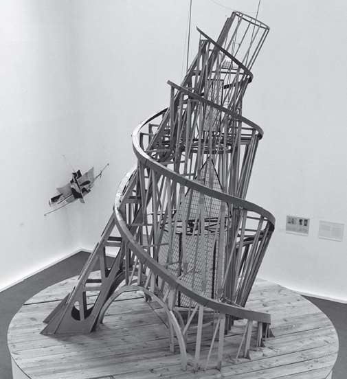
勒·柯布西耶
极具创造力的勒·柯布西耶是一名激进的现代主义者，他跨越了几个世纪同卢卡·帕乔利握手。在使用公制的年代，勒·柯布西耶渴望为黄金比例的辉煌历史贡献出自己的力量。他抱怨公制让计量单位失去了个性，因此使用人体标尺的想法已然化为泡影。
为了恢复人类的影响力，勒·柯布西耶基于黄金比例发明了自己的标尺，但没有为现代人所接受。为了呼应“维特鲁威人”的理想比例，他想到了“模度人”。“米、厘米、分米并不符合人体尺寸，而模度却不同。我测量了肚脐到头部和手臂的距离，发现二者成黄金比例，于是创建了一个反映人体尺寸的度量系统。我在无意中发现了这样一个系统。这并不是故意炫耀，但模度十分重要，它为工业带来了无限可能，它是一个有用的、现代的、举世瞩目的创造。”
马蒂拉·吉卡在他的《黄金数》（The Golden Number）第二卷中承认了勒·柯布西耶的贡献。他在书中解释说，黄金矩形“通过近代的设计成功地进入了建筑领域，这得益于新运动中最著名的代表人物”。他接着描述了勒·柯布西耶的日内瓦
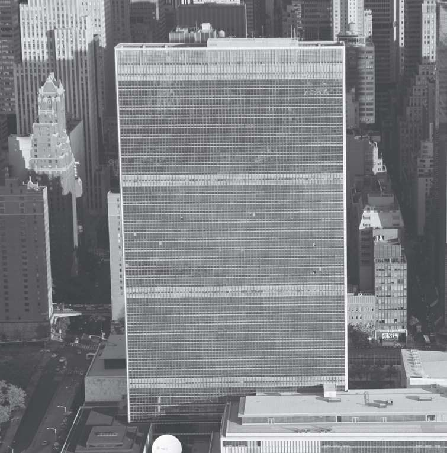
纽约联合国总部大厦上的三个黄金矩形。
勒·柯布西耶（1887—1965）
查尔斯—爱德华—让纳雷·格里斯（Charles-Édouard Jeanneret-Gris）就是人们熟知的勒·柯布西耶。他出生于瑞士，但加入了法国籍。在家乡经过学习后，勒·柯布西耶在29岁时搬到了巴黎，并于1922年创办了自己的建筑工作室。他游历过欧洲、拉丁美洲和美国。
勒·柯布西耶跨越了建筑设计，投入到城市规划以及产品设计的工作中。他的一些设计成为当代的象征，其中就包括他设计的躺椅。他还创办过几份有影响力的刊物，还参与讲学并发表多部学术著作。他同时也是一位著名的画家。勒·柯布西耶在世界各地建造了多所个人住宅和大型城市住宅区，成为最著名的建筑师之一。他加入了设计纽约联合国总部大厦的国际委员会。尼迈耶是勒·柯布西耶的学生，同时也是另一位参与该项目的建筑巨匠。经过他的修改，勒·柯布西耶的设计最终得以变为现实。因此，在这座巨大的建筑正面看到三个黄金矩形也就不足为奇了。
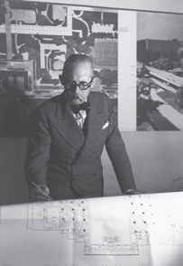
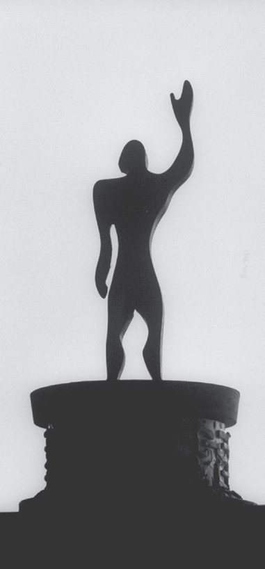
“模度”雕像，根据勒·柯布西耶的理想模度打造而成。手臂抬起的雕像高为226厘米，作为中点的肚脐距雕像底座113厘米。这两个数字乘以或除以Φ都会得到一个类似于斐波那契数列的递归数列。
“世界城市”的设计。勒·柯布西耶解释说，他将世界城市想象为一座矩形城市，矩形的长宽之比为黄金比例：“黄金比例确定了两条（生长）轴以及整个区域的边界。匀称之感由黄金比例表现而来。纵观历史，黄金比例对许多作品的和谐统一起到了决定的作用。”
第二次世界大战期间世界馆停止了修建。勒·柯布西耶在这段时间里全身心地投入到理论研究中。1942年至1948年，他根据黄金比例和北欧撒克逊人的身高（1.82米）创造了模度，一种用于建筑和家居设计的单位制。1950年，《模度》（The Modulor）一经出版便迅速获得成功。1955年，《模度》的续作《模度2》（The Modulor 2）问世，书中将撒克逊人改为了身高1.72米的南欧拉丁人。此外，模度系统再次沿用了古典的理念把建筑比例与住户的人体比例联系到一起。